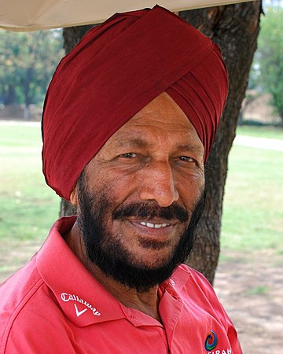

My Inspiration
Milkha Singh: The fliying Sikh


I do jogging and physical exercise which I would call my hobby. I like it because it’s nice and always makes me feel good afterwards. It’s a great way to stay fit and make use of some extra time I have. It’s a very common type of sport for many people and it’s no wonder because it’s basically simple and easy to start. All you need is some energy, motivation, a pair of sport shoes and trousers that have some flexibility